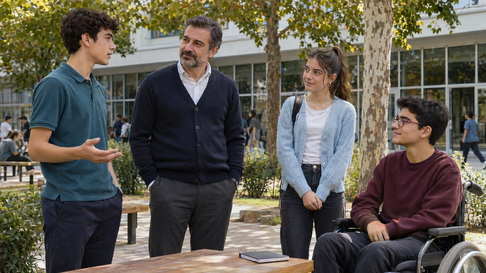

Önce görseli incele, ardından yalnızca repliği seslendir. Her sahnenin görseli, metni ve Flow hareket önerisi ayrı dosyada hazır.
59 sahne · gerçekçi görseller
Sahne 01 / 59
Ali'nin açılış sorusu

Seslendirme masası
Bu sahnede kim konuşuyor?
Ortam sesi ve süre notu
Hedef süre okuyuş tahminidir. Son ses kaydı 8 saniyeyi aşarsa ek sahne aç; kelime kesme veya sesi hızlandırma. Uzun cümlelerin devam planlarında aynı ses ve ton korunmalı.
Sahne sırası
İstediğin görsele dokunarak devam et.